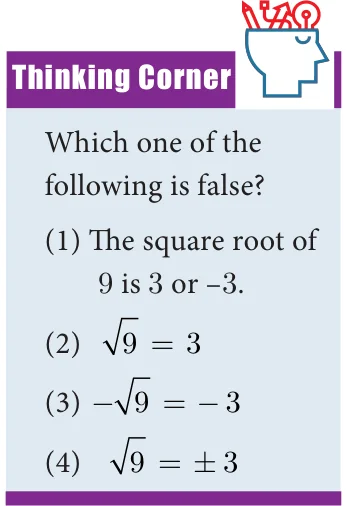
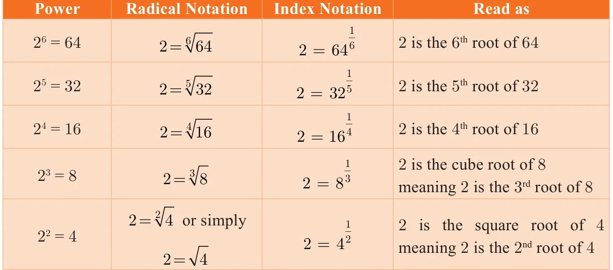
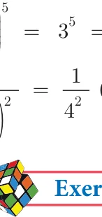
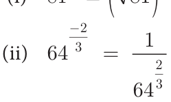

\(= 3.4545\) ( correct to 4 decimal places).
The number lies between 3 and 4
-4 -3 -2 -1 0 1 2 3 4 5 6
3.0 3.1 3.2 3.3 3.4 3.5 3.6 3.7 3.8 3.9 4.0
3.40 3.41 3.42 3.43 3.44 3.45 3.46 3.47 3.48 3.49 3.50
3.450 3.451 3.452 3.453 3.454 3.455 3.456 3.457 3.458 3.459 3.460
3.4540 3.4541 3.4542 3.4543 3.4544 3.4545 3.4546 3.4547 3.4548 3.4549 3.4550
Fig. 2.10
Exercise 2.4
- 1.Represent the following numbers on the number line.
- (i)5.348 (ii) 6.4 upto 3 decimal places. (iii) 4.73 upto 4 decimal places.
2.5 Radical Notation
Let n be a positive integer and r be a real number. If Note
\(r = x\), then r is called the n root of x and we write It is worth spending some
n th
\(x = r\) time on the concepts of the The symbol \(^{n}\) (read as \(n^{th}\) root) is called a radical; ‘square root’ and the ‘cube n is the index of the radical (hitherto we named it as root’, for better understanding exponent); and x is called the radicand. of surds.
What happens when \(n = 2\)? Then we get \(r = x\), so that r is x , our good old friend,
the square root of x. Thus 16 is written as 16 , and when \(n =3\), we get the cube root of x,
namely x . For example, 8 is cube root of 8, giving 2. (Is not \(8 = 2\) ?)
How many square roots are there for 4? Since \((+2) \times (+2)\)

\(= 4\) and also ( \(- 2) \times\) ( \(- 2) = 4\), we can say that both +2 and \(- 2\) are square roots of 4. But it is incorrect to write that \(4 = \pm\) . This is because, when n is even, it is an accepted convention to
reserve the symbol x for the positive n root and to denote
n th
the negative n root by \(- x\) . Therefore we need to write
th n
\(4 =2\) and \(- 4 = - 2\).
When n is odd, for any value of x, there is exactly one real
n root. For example, \(8 = 2\) and \(- 32 = - 2\).
th 3 5
2.5.1 Fractional Index
Consider again results of the form \(r = x\) . In the adjacent notation, the index of the radical (namely n which is 3 here) tells you how many times the answer (that is 4) must be multiplied with itself to yield the radicand. To express the powers and roots, there is one more way of representation. It involves the use of fractional indices.

We write x as \(x \frac{1}{n.}\)
With this notation, for example is \(\frac{1}{3}\) and is \(\frac{1}{2}\) . Observe in the following table just some representative patterns arising out of this new acquaintance:


Express the following in the form 2 :
- (i)8 (ii) 32 (iii) \(\frac{1}{4}\) (iv) 2 (v) 8 .
Solution
- (i)\(8 = 2 \times 2 \times 2\); therefore \(8 = 2\)
- (ii)\(32 = 2 \times _{1}/_{2}2 \times 2 \times 2 \times 2 = 2\) (iii) \(\frac{111}{42 \times 22} = = 2 = 2\)
\(5 - 2\)
- (iv)\(2 = 2\)
- (v)\(8 = 2 \times 2 \times 2 =\) \(\frac{1}{22}\) which may be written as \(\frac{3}{22}\)
Meaning of \(x \frac{m}{n}\) , (where m and n are Positive Integers)
We interpret \(x \frac{m}{n}\) either as the \(n^{th}\) root of the \(m^{th}\) power of x or as the \(m^{th}\) power of
the n root of x.
th
In symbols, \(x ^{n} =(x ^{m})^{n}\) or (x \(^{n} )^{m} = ^{n} x ^{m}\) or \((^{n} x )^{m}\)
Example 2.17 Find the value of (i) \(81 \frac{5}{4} \frac{-2}{3}\)
Solution
\(\frac{5}{4} =\) ( ) = \(= = \times \times \times \times = 243\)


\(= =\) (How?) \(= \frac{1}{16}\)
( )
- 1.Write the following in the form of 5 :
\(\frac{1}{5}\)
- (i)625 (ii) (iii) 5 (iv) 125
- 2.Write the following in the form of 4 :
- (i)16 (ii) 8 (iii) 32
- 3.Find the value of
- (i)\((49) \frac{1}{2}\) (ii) \((243) \frac{2}{5}\) (iii) \(9 ^{2}\) (vi) \(\frac{64}{125} \frac{ -\) 2}{3}
- 4.Use a fractional index to write: _{7}
- (i)5 (ii) 7 (iii) ( 49) (iv) \(\frac{1}{3100}\)